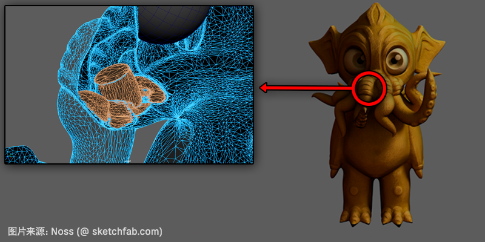

为了使“重新拓扑”(Retopologize)快速高效地执行其作业，您需要确保为其提供尽可能整洁的基础网格和设置。通常，“重新拓扑”(Retopologize)最适用于具有大致均匀面分布的高多边形有机对象。如果在重新拓扑网格时遇到问题，请尝试以下操作：
准备重新拓扑网格：
- 在下为“重新拓扑”(Retopologize)配置设置，并启用“预处理网格”(Preprocess Mesh)。特别是在输入网格非常密集的情况下，启用预处理将加快并提高最终“重新拓扑”(Retopologize)操作的速度和成功率。通过预处理测试“重新拓扑”(Retopologize)的输出。
如果输入网格不太密集或预处理对网格不可行，请尝试以下操作：
- 将网格分离为断开的组件（通过）。
- 尽可能多地软化边（）。仅将硬边限制为需要保持不同特征的区域，且仅限于完全循环边。
注： 若要查看模型上的当前硬边，请选择模型并转到。
- 在启用以下选项的情况下，对网格运行：
- 边数大于 4 的面(Faces with more than 4 sides)
- 凹面(Concave faces)
- 带洞面(Faces with holes)
- 非平面面(Non-planar faces)
- 层状几何体(Lamina geometry)
- 非流形几何体(Nonmanifold geometry)
- 零长度边(Edges with zero length)
- 包含零几何体区域的面(Faces with zero geometry area)
- 无效组件(Invalid Components)
- 将具有非连续重复顶点的任何面分割为 2 个面。
- 对具有非常小阈值的所有顶点运行，以合并所有非常短的边。
- 对网格运行，以均匀地展开组件。
- 删除网格上的历史（尤其是场景文件中包含 Maya 2020 之前的 Retopo 节点时）。
- 根据模型是硬曲面还是有机网格，相应地设置“重新拓扑”(Retopologize)设置。特别是，
- 对于有机曲面：默认设置已针对有机曲面进行了合理调整。
- 对于硬曲面：设置较高的“拓扑规则性”(Topology Regularity)和“面均匀性”(Face Uniformity)值（即 1），以及较低的“各向异性”(Anisotropy)值（即 0）。
- 运行“重新拓扑”(Retopologize)。
注： 如果无法运行“重新拓扑”(Retopologize)，则可能未充分运行自动“清理”(Cleanup)功能。在这种情况下，您需要先手动清理网格，然后再重试（请参见下面的“使用扫描数据的提示”）。

使用扫描数据的提示
处理从现实对象扫描的网格时，初始扫描的质量将极大地影响重新拓扑之前所需的准备工作量。对于较差的扫描，仅仅运行上述步骤可能无法充分地从基础网格中移除所有无效组件。特别要注意以下事项：
- 内部面可能会产生许多非流形顶点。“清理”(Cleanup)命令可以移除此情况的简单实例，但在复杂情况下，其解决方案可能是分割顶点。遗憾的是，这将产生一个洞，这也会对“重新拓扑”(Retopologize)造成问题。使用“合并”(Merge)命令重新合并这些顶点时，将再次产生非流形顶点（因此，将进入无限循环）。

如果出现此情况，我们建议将“清理”(Cleanup)命令设置为“选择匹配多边形”(Select matching polygons)模式，然后在“非流形几何体”(Nonmanifold geometry)选项处于启用状态的情况下运行命令。这将选择所有非流形几何体而不进行修复，此时您可以进行检查，并通过移除与问题区域关联的内部几何体进行手动修复。
- 面中的洞也会导致“重新拓扑”(Retopologize)出现问题。网格必须防水，才能正常执行算法。遗憾的是，对包含非流形几何体的网格运行“填充洞”(Fill Hole)命令时，通常会产生更多非流形几何体，因此您需要手动焊接这些顶点。
- 通常，扫描仪会将模型上的所有边设置为硬边。这会导致在启用“保留硬边”(Preserve Hard Edges)选项时无法运行“重新拓扑”(Retopologize)。若要确定是否存在此问题，请选择模型，然后转到。将以紫色显示所有硬边。然后，您可以手动软化所有内容（沿要保留的特征运行的边除外）。